Demo CRM — отчёт GUI-самотеста
Тест выполнен самим приложением: оно вело собственное окно по шагам, рисовало номер шага на плашке и снимало себя. Шаги 15–18 — реальный вызов SDK: нажата настоящая кнопка «Создать из реестра», запущен Contragenti; шаги 19–33 — разделы CRM: клиенты, контакты, лиды, сделки, номенклатура, заказы с проводкой остатков, календарь, главная.
Launcher: F:\grok\contragents data gov\company_search.py
| # | Шаг | Статус | Проверка | Снимки |
|---|---|---|---|---|
| 01 | Стартовое окно, база пуста | OK | в списке 0, в базе 0 | 01_start.png |
| 02 | Импорт карточки UNISIM-SOFT из XML Contragenti | OK | результат 0, в списке 1, сообщение зелёное=True | 02_import_unisim.png |
| 03 | Импорт карточки ALFA-VIS COM | OK | результат 0, в списке 2 | 03_import_alfavis.png |
| 04 | Повторный импорт UNISIM — отсечён как дубликат | OK | результат 1, в базе 2, сообщение янтарное=True | 04_duplicate.png |
| 05 | Фильтр «ALFA» оставляет одну запись | OK | в списке 1 | 05_filter_alfa.png |
| 06 | Фильтр сброшен — снова две записи | OK | в списке 2 | 06_filter_clear.png |
| 07 | Панель настроек раскрывается внутри окна (без модального диалога) | OK | сообщение: Путь к Contragenti и адрес ERP — затем «Сохранить». | 07_settings_open.png |
| 08 | Панель настроек скрыта повторным нажатием | OK | 08_settings_close.png | |
| 09 | Навигация: «Рабочий стол» — большие плитки этапов процесса | OK | 09_workspace_empty.png | |
| 10 | Навигация: раздел «Лиды» открывается — пустой список с кнопками «Создать лид» и «В клиенты» | OK | раздел=5, записей 0 | 10_nav_leads_empty.png |
| 11 | Навигация: возврат в «Клиенты» | OK | 11_accounts.png | |
| 12 | «Удалить» без выбранной строки — предупреждение, ничего не удалено | OK | в базе 2, сообщение янтарное=True | 12_delete_noselect.png |
| 13 | «Удалить» с выбранной строкой — просьба подтвердить, база не тронута | OK | в базе 2, сообщение янтарное=True | 13_delete_confirm_ask.png |
| 14 | Повторное «Удалить» — клиент ALFA-VIS удалён (останется UNISIM) | OK | в базе 1, в списке 1, сообщение зелёное=True | 14_delete_done.png |
| 15 | Фильтр «ALFA-VIS COM» введён — по нему SDK запустит Contragenti | OK | launcher: F:\grok\contragents data gov\company_search.py | 15_sdk_filter.png |
| 16 | Реальный вызов SDK: Contragenti запущен, нашёл ALFA-VIS (кэш date.gov.md или портал) и вернул XML-карточку | OK | ожидание 0 с, снимков во время работы 2, в базе 1 → 2, сообщение зелёное=True; | 16_sdk_added.png +2 |
| 17 | Карточка из Contragenti в списке CRM (адрес, форма, администратор — данные реестра) | OK | в списке 2 | 17_sdk_list.png |
| 18 | Повторный вызов SDK — та же карточка отсечена как дубликат, база не выросла | OK | ожидание 0 с, в базе 2, сообщение янтарное=True; | 18_sdk_duplicate.png +2 |
| 19 | Окно CRM не зависает, пока открыт Contragenti: обработчик ожидания отработал | OK | тактов ожидания 14 (по 200 мс), сообщение: Выбор отменён: Контрагент не выбран. | 19_sdk_responsive.png |
| 20 | Клиенты: в карточке сохранены тип, телефон, e-mail и контактное лицо | OK | Карточка клиента «Societatea cu Răspundere Limitată ALFA-VIS COM» сохранена. | 20_client_card.png |
| 21 | Контакты: создан контакт «Yevgeny Bubis», привязан к клиенту ALFA-VIS | OK | контактов 1; Добавлено: контакт «Yevgeny Bubis». | 21_contact_new.png |
| 22 | Лиды: создан лид «Agro-Prim SRL» — в работе, источник «Выставка» | OK | лидов 1 | 22_lead_new.png |
| 23 | Лиды: «В клиенты» — создан клиент Agro-Prim SRL, статус лида «Конвертирован» | OK | клиентов 2 → 3, статус лида: Конвертирован | 23_lead_convert.png |
| 24 | Сделки: создана сделка 48 500 MDL для Agro-Prim на этапе «Предложение» | OK | сделок 1 | 24_deal_new.png |
| 25 | Сделки: этап переведён в «Выиграна» (воронка) | OK | этап в базе: Выиграна | 25_deal_won.png |
| 26 | Номенклатура: товар (остаток 5), услуга (час) и изделие собственного производства | OK | позиций 3 | 26_items.png |
| 27 | Заказы: заказ на продажу №0001 — две строки (2 насоса + 8 ч монтажа), итого 27 800 MDL | OK | строк 2, итого 27800.00 | 27_order_lines.png |
| 28 | Заказы: статус «Выполнен» + «Провести» — остаток насосов списан 5 → 3 | OK | остаток T-001 = 3; Заказ проведён: списано со склада по 2 строкам | 28_order_posted.png |
| 29 | Заказы: производственный заказ №0002 проведён — оприходовано 2 изделия (0 → 2) | OK | остаток P-001 = 2; Заказ проведён: оприходовано изделий по 1 строкам | 29_order_production.png |
| 30 | Календарь: звонок (просрочен на 2 дня) и встреча через 3 дня | OK | открытых задач 2 | 30_tasks.png |
| 31 | Календарь: фильтр «Просроченные» — одна задача | OK | в списке 1 | 31_tasks_overdue.png |
| 32 | Календарь: «Выполнено» — просроченная задача закрыта, список пуст | OK | в списке 0; Задача отмечена выполненной. | 32_task_done.png |
| 33 | Рабочий стол: плитки показывают процесс — два заказа исполнены и закрыты | OK | ожидает аванс=0, в работе=0, готово к отгрузке=2, ждём оплату=0, закрыто=0 | 33_workspace.png |
| 34 | Генератор тестовых данных: клиентов 13, контактов 20, лидов 12, сделок 11, номенклатуры 15, заказов 16 (строк 33), задач 24 — плитки процесса заполнились | OK | аванс=1, в работе=4, к отгрузке=3, ждём оплату=2, закрыто=3 | 34_seed_workspace.png |
| 35 | Плитка «Отгружено — ждём оплату» открывает «Заказы» с этим фильтром | OK | в списке 2, по условию этапа 2 | 35_tile_drilldown.png |
| 36 | Связь с ERP una.md по HTTP-API хаба: результат проверки виден в полосе ERP | OK | ERP недоступна: Error sending data: (12029) A connection with the server could not be established | 36_erp_check.png |
| 37 | Заказы на полном наборе: продажа / услуга / производство, все статусы | OK | в списке 18, в базе 18 | 37_seed_orders.png |
| 38 | Номенклатура на полном наборе: пресет «Нет на складе» | OK | без остатка 2 из 18 | 38_seed_items.png |
| 39 | Календарь на полном наборе: просроченные задачи выделены пресетом | OK | просроченных 2 | 39_seed_tasks_overdue.png |
| 40 | Канбан «Заказы»: пять колонок процесса, карточки разложены по этапам | OK | колонок 5; по этапам: 1 / 4 / 3 / 2 / 3 | 40_kanban_orders.png |
| 41 | Канбан: карточка перенесена «В работе» → «Готово к отгрузке», статус в базе изменён | OK | колонка 2, статус «Выполнен», этап 5 | 41_kanban_move.png |
| 42 | Канбан: «← Назад» возвращает карточку на прежний этап | OK | колонка 1, этап 4 | 42_kanban_back.png |
| 43 | Канбан: карточка перетащена мышью из «В работе» в «Отгружено — ждём оплату» | OK | в колонке «ждём оплату» 2 → 3, дата отгрузки «2026-09-05», этап 6 | 43_kanban_drag.png |
| 44 | Канбан: перетаскивание работает в обе стороны — дата отгрузки снята | OK | дата отгрузки «», этап 4 | 44_kanban_drag_back.png |
| 45 | Канбан «Задачи»: колонки по срокам — просрочено / сегодня / позже / выполнено | OK | колонок 4; просрочено 2, сегодня 1, позже 18, выполнено 5 | 45_kanban_tasks.png |
| 46 | План работ (Гант): производственные заказы и их операции на шкале времени | OK | строк 14, из них работ 10, просрочено заказов 1; период 29.07.2026 — 21.09.2026 | 46_gantt_production.png |
| 47 | План работ: полоса заказа перетащена мышью на 5 дней вперёд — даты в базе сдвинулись | OK | было 31.07–25.08, стало 05.08–30.08 (в базе 2026-08-05) | 47_gantt_drag_move.png |
| 48 | План работ: за правый край полосы растянут только срок, дата заказа не тронута | OK | срок 30.08 → 06.09, начало осталось 05.08 | 48_gantt_drag_resize.png |
| 49 | План работ: фильтр «Все заказы» — строк становится больше | OK | строк 42, работ 27 | 49_gantt_all.png |
| 50 | Отчёты: «Процесс исполнения заказов» — предпросмотр по этапам | OK | строк 9, колонок 6 | 50_report_process.png |
| 51 | Выгрузка отчёта в Excel и PDF | OK | process_2026-09-05.xlsx (3209 байт, zip=True); process_2026-09-05.pdf (1090499 байт, %PDF=True) | 51_report_export.png |
| 52 | Отчёт «Дебиторская задолженность»: строки есть, выгружен в оба формата | OK | строк 3; receivables_2026-09-05.xlsx, receivables_2026-09-05.pdf | 52_report_receivables.png |
| 53 | Отчёт «Остатки номенклатуры»: остатки после проводок, выгружен в оба формата | OK | позиций 13; stock_2026-09-05.xlsx, stock_2026-09-05.pdf | 53_report_stock.png |
| 54 | Итоговое состояние окна: клиенты из SDK, лида и генератора | OK | в базе 16 клиентов | 54_final.png |
01Стартовое окно, база пуста — OK
в списке 0, в базе 0
Строка сообщений: База: F:\grok\contragents data gov\crm_delphi\shots_gui\test_clients.db | клиентов: 0
после шага: 01_start.png
{kind=link}
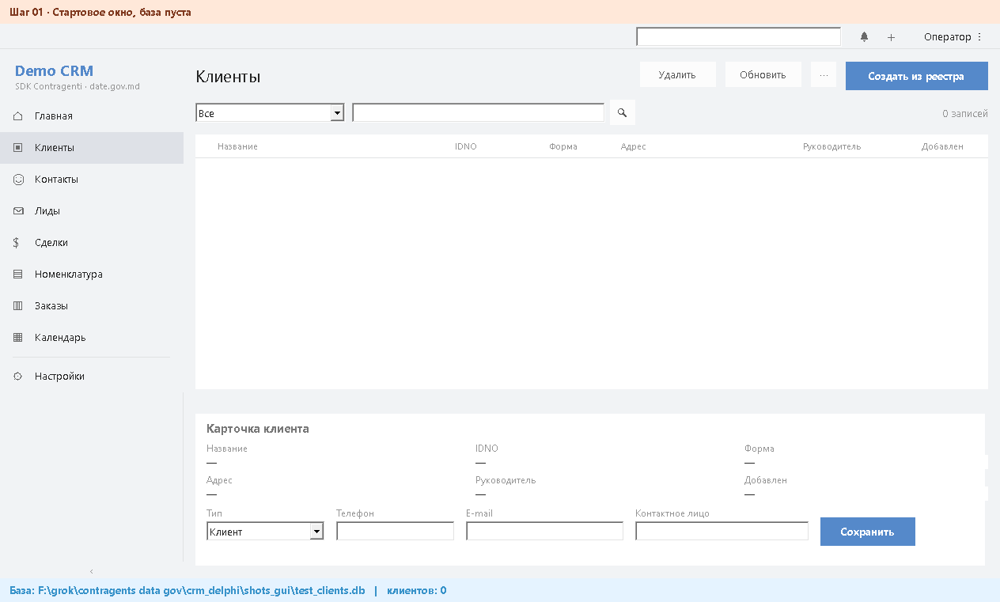
02Импорт карточки UNISIM-SOFT из XML Contragenti — OK
результат 0, в списке 1, сообщение зелёное=True
Строка сообщений: Добавлен клиент: CENTRUL DE ELABORARE UNISIM-SOFT S.R.L. (IDNO 1003600116460)
после шага: 02_import_unisim.png
{kind=link}
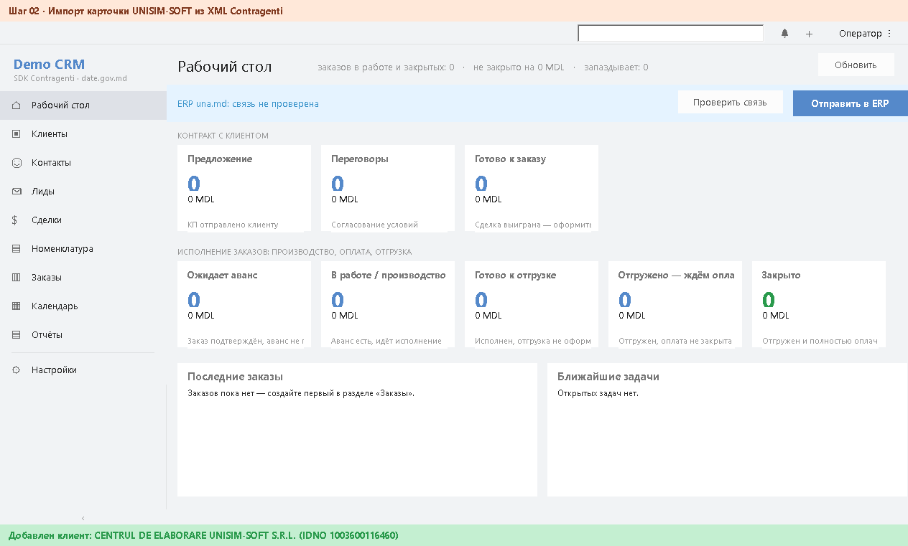
03Импорт карточки ALFA-VIS COM — OK
результат 0, в списке 2
Строка сообщений: Добавлен клиент: Societatea cu Raspundere Limitata ALFA-VIS COM (IDNO 1017600018242)
после шага: 03_import_alfavis.png
{kind=link}
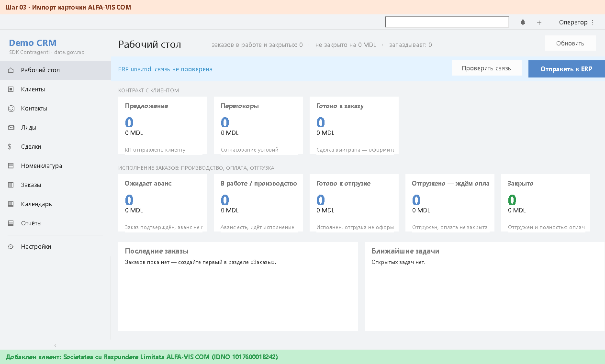
04Повторный импорт UNISIM — отсечён как дубликат — OK
результат 1, в базе 2, сообщение янтарное=True
Строка сообщений: Уже в базе: CENTRUL DE ELABORARE UNISIM-SOFT S.R.L. (IDNO 1003600116460)
после шага: 04_duplicate.png
{kind=link}
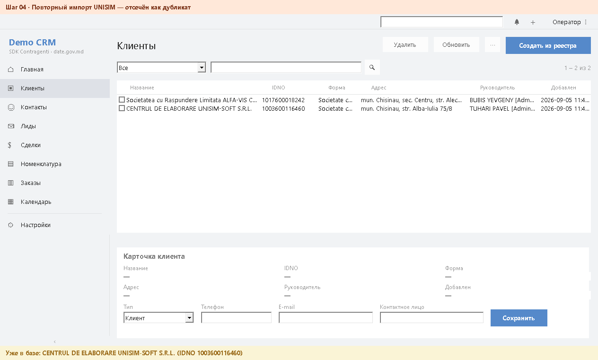
05Фильтр «ALFA» оставляет одну запись — OK
в списке 1
Строка сообщений: Фильтр «ALFA»: показано 1 из 2
после шага: 05_filter_alfa.png
{kind=link}
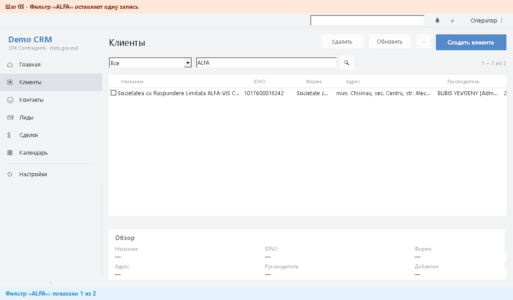
06Фильтр сброшен — снова две записи — OK
в списке 2
Строка сообщений: Фильтр «ALFA»: показано 1 из 2
после шага: 06_filter_clear.png
{kind=link}
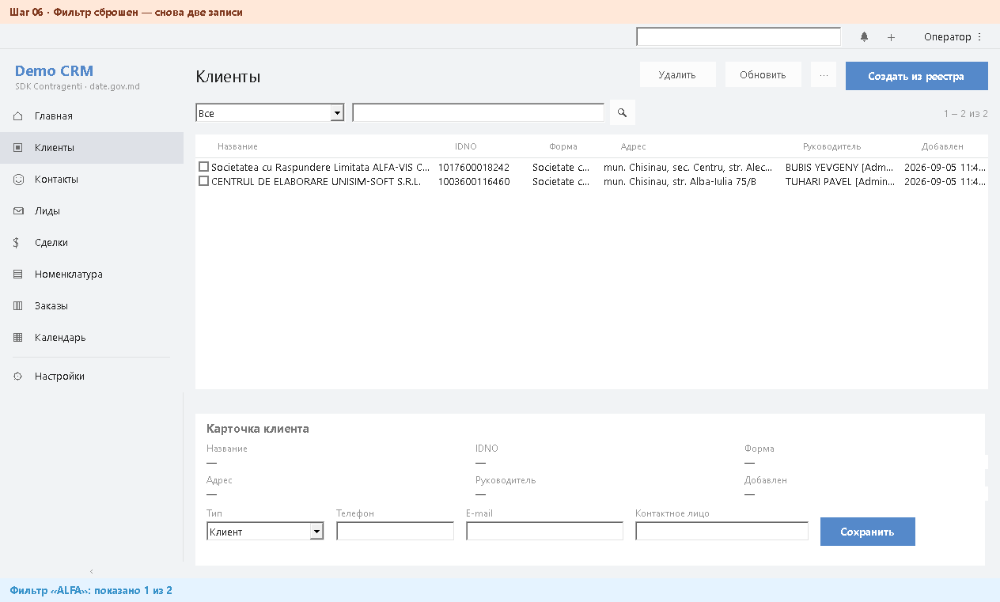
07Панель настроек раскрывается внутри окна (без модального диалога) — OK
сообщение: Путь к Contragenti и адрес ERP — затем «Сохранить».
Строка сообщений: Путь к Contragenti и адрес ERP — затем «Сохранить».
после шага: 07_settings_open.png
{kind=link}
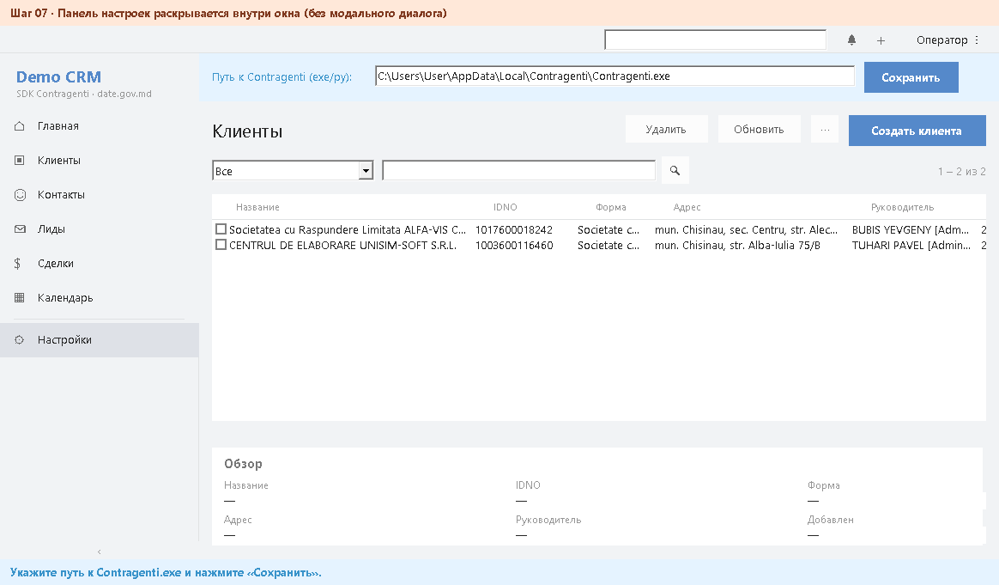
08Панель настроек скрыта повторным нажатием — OK
Строка сообщений: Путь к Contragenti и адрес ERP — затем «Сохранить».
после шага: 08_settings_close.png
{kind=link}
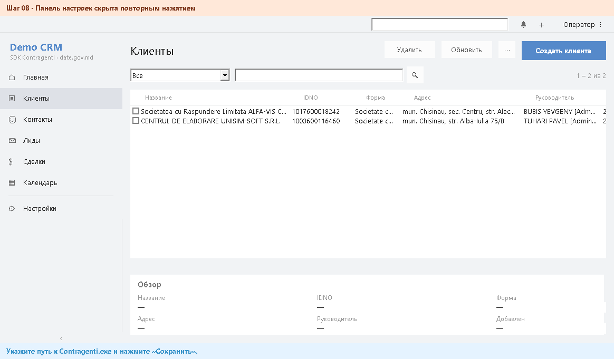
09Навигация: «Рабочий стол» — большие плитки этапов процесса — OK
Строка сообщений: Путь к Contragenti и адрес ERP — затем «Сохранить».
после шага: 09_workspace_empty.png
{kind=link}
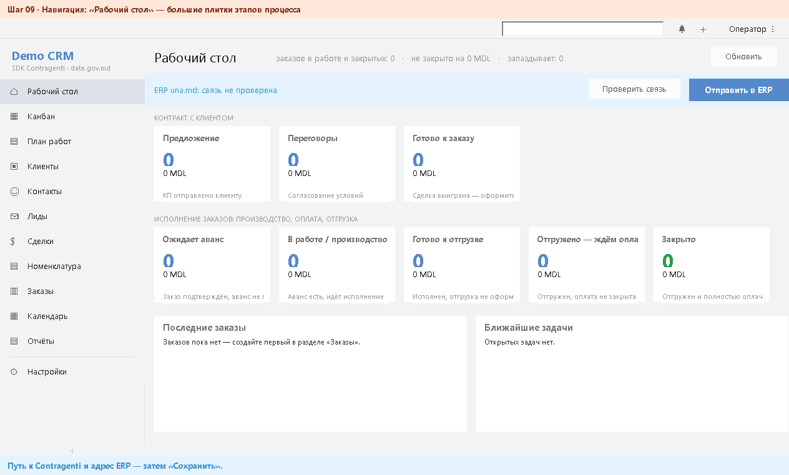
10Навигация: раздел «Лиды» открывается — пустой список с кнопками «Создать лид» и «В клиенты» — OK
раздел=5, записей 0
Строка сообщений: Путь к Contragenti и адрес ERP — затем «Сохранить».
после шага: 10_nav_leads_empty.png
{kind=link}
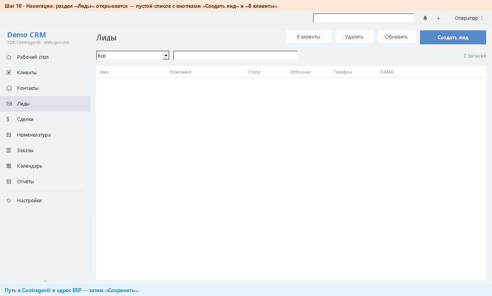
11Навигация: возврат в «Клиенты» — OK
Строка сообщений: Путь к Contragenti и адрес ERP — затем «Сохранить».
после шага: 11_accounts.png
{kind=link}
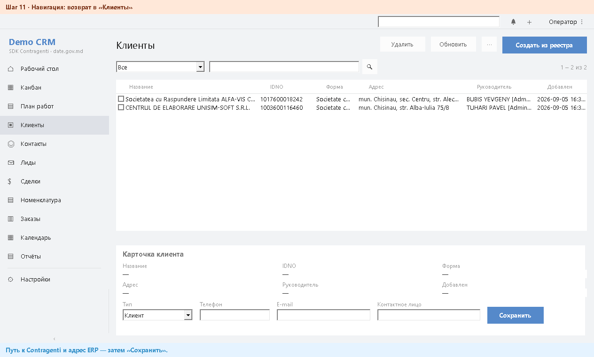
12«Удалить» без выбранной строки — предупреждение, ничего не удалено — OK
в базе 2, сообщение янтарное=True
Строка сообщений: Выберите клиента в списке, затем нажмите «Удалить».
после шага: 12_delete_noselect.png
{kind=link}
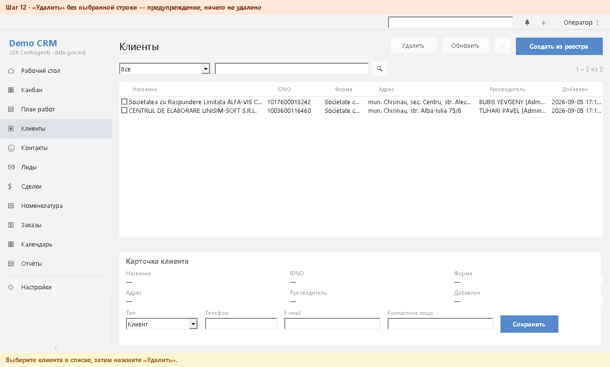
13«Удалить» с выбранной строкой — просьба подтвердить, база не тронута — OK
в базе 2, сообщение янтарное=True
Строка сообщений: Удалить «Societatea cu Raspundere Limitata ALFA-VIS COM»? Нажмите «Удалить» ещё раз для подтверждения.
после шага: 13_delete_confirm_ask.png
{kind=link}
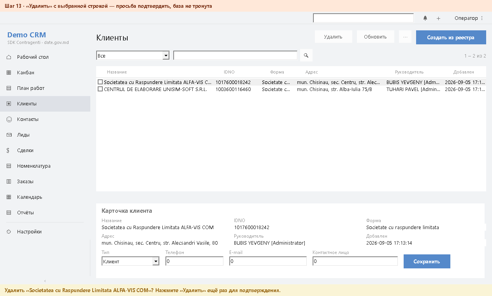
14Повторное «Удалить» — клиент ALFA-VIS удалён (останется UNISIM) — OK
в базе 1, в списке 1, сообщение зелёное=True
Строка сообщений: Удалён клиент «Societatea cu Raspundere Limitata ALFA-VIS COM». Записей: 1
после шага: 14_delete_done.png
{kind=link}
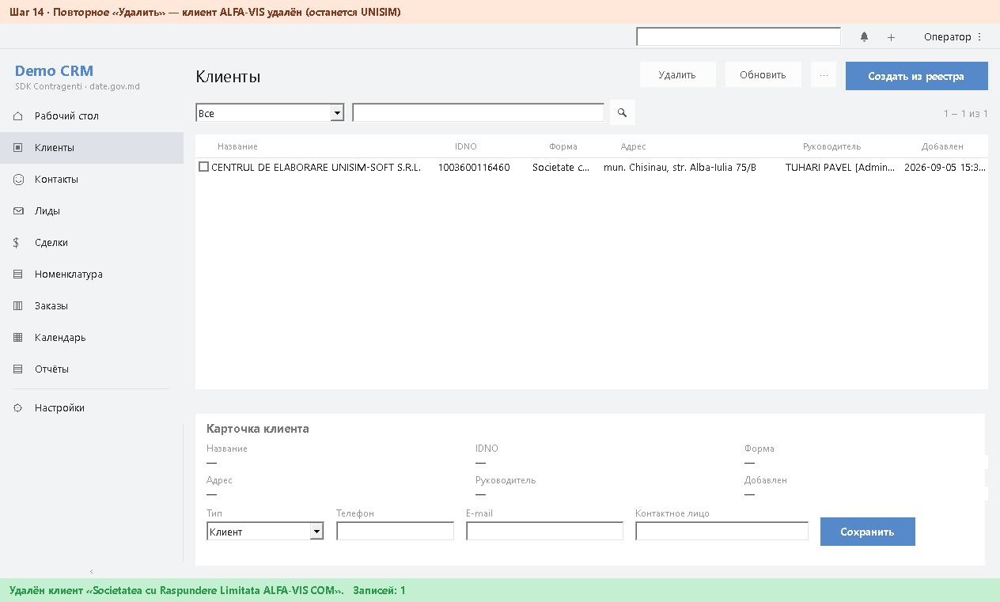
15Фильтр «ALFA-VIS COM» введён — по нему SDK запустит Contragenti — OK
launcher: F:\grok\contragents data gov\company_search.py
Строка сообщений: Фильтр «ALFA-VIS COM»: показано 0 из 1
после шага: 15_sdk_filter.png
{kind=link}
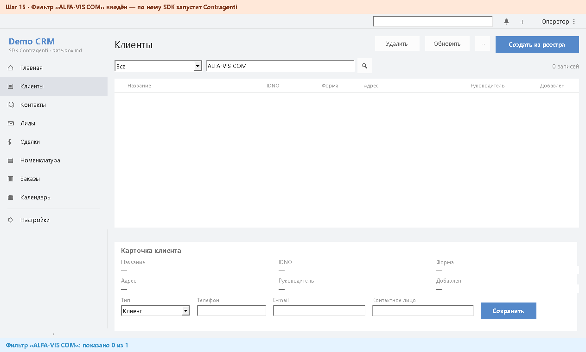
16Реальный вызов SDK: Contragenti запущен, нашёл ALFA-VIS (кэш date.gov.md или портал) и вернул XML-карточку — OK
ожидание 0 с, снимков во время работы 2, в базе 1 → 2, сообщение зелёное=True;
Строка сообщений: Добавлен клиент: Societatea cu Răspundere Limitată ALFA-VIS COM (IDNO 1017600018242)
во время работы SDK: 16_sdk_3_contragenti_results.png

во время работы SDK: 16_sdk_4_contragenti_card_return.png
{kind=link}
после шага: 16_sdk_added.png
{kind=link}
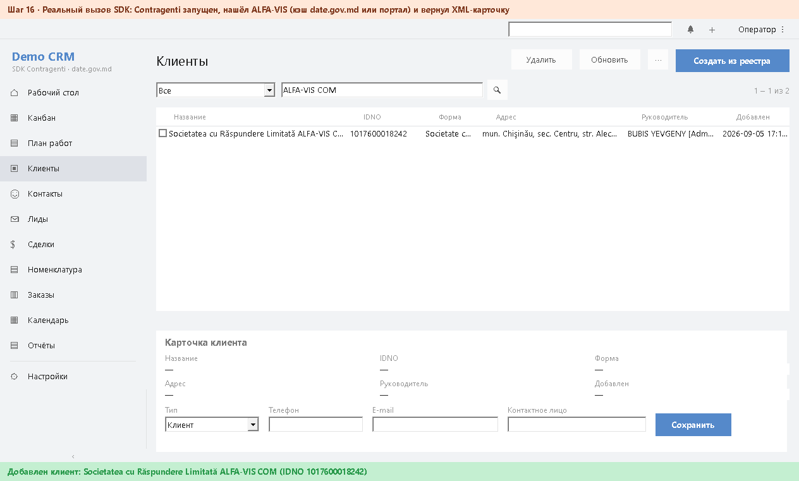
17Карточка из Contragenti в списке CRM (адрес, форма, администратор — данные реестра) — OK
в списке 2
Строка сообщений: Добавлен клиент: Societatea cu Răspundere Limitată ALFA-VIS COM (IDNO 1017600018242)
после шага: 17_sdk_list.png
{kind=link}
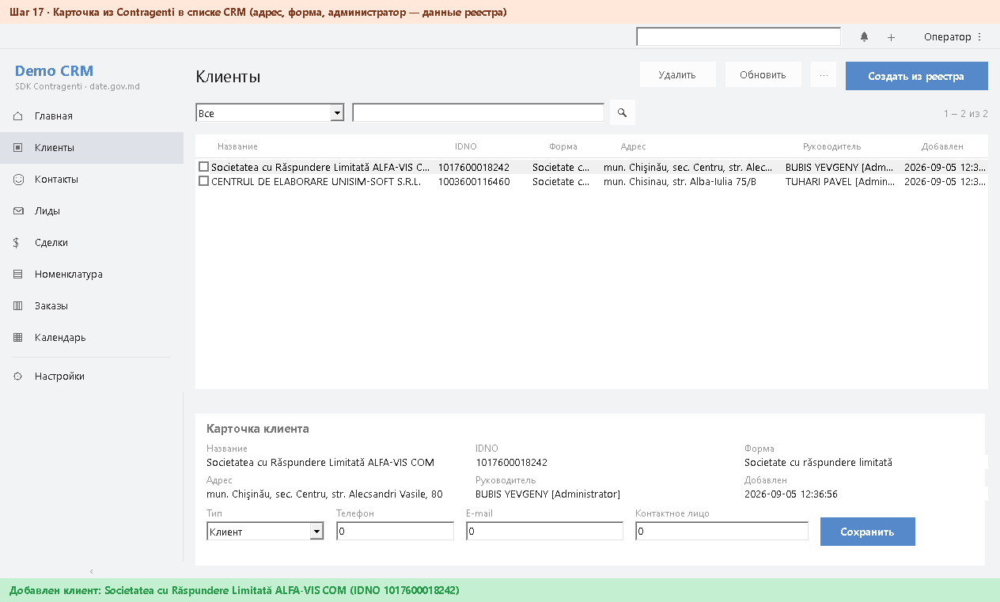
18Повторный вызов SDK — та же карточка отсечена как дубликат, база не выросла — OK
ожидание 0 с, в базе 2, сообщение янтарное=True;
Строка сообщений: Уже в базе: Societatea cu Răspundere Limitată ALFA-VIS COM (IDNO 1017600018242)
во время работы SDK: 18_sdk_3_contragenti_results.png

во время работы SDK: 18_sdk_4_contragenti_card_return.png

после шага: 18_sdk_duplicate.png
{kind=link}
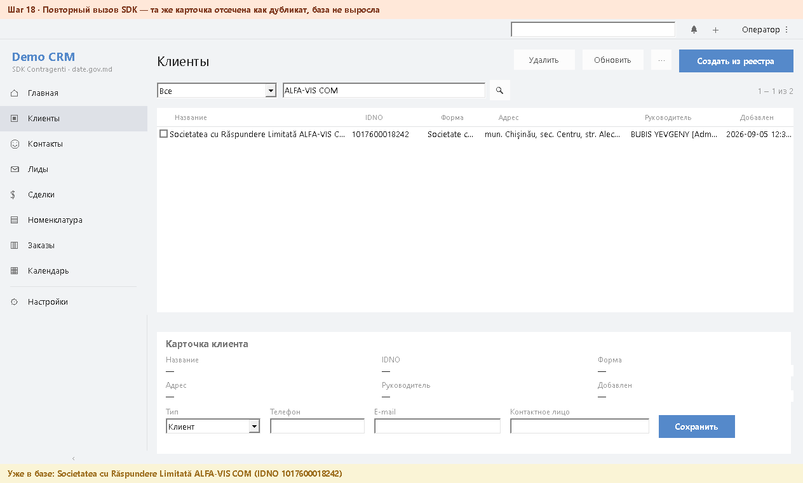
19Окно CRM не зависает, пока открыт Contragenti: обработчик ожидания отработал — OK
тактов ожидания 14 (по 200 мс), сообщение: Выбор отменён: Контрагент не выбран.
Строка сообщений: Выбор отменён: Контрагент не выбран.
после шага: 19_sdk_responsive.png
{kind=link}
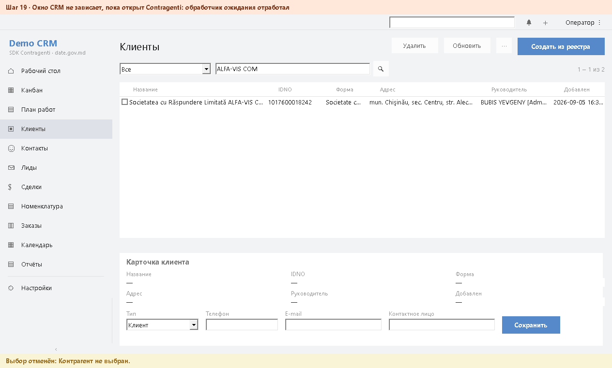
20Клиенты: в карточке сохранены тип, телефон, e-mail и контактное лицо — OK
Карточка клиента «Societatea cu Răspundere Limitată ALFA-VIS COM» сохранена.
Строка сообщений: Карточка клиента «Societatea cu Răspundere Limitată ALFA-VIS COM» сохранена.
после шага: 20_client_card.png
{kind=link}
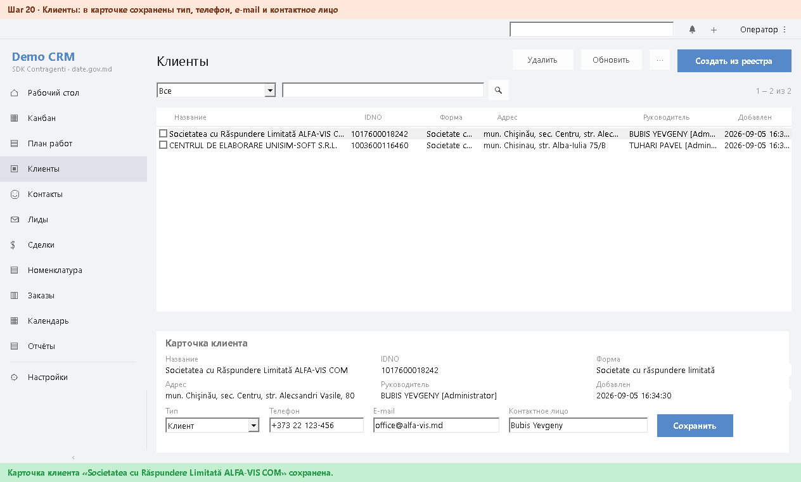
21Контакты: создан контакт «Yevgeny Bubis», привязан к клиенту ALFA-VIS — OK
контактов 1; Добавлено: контакт «Yevgeny Bubis».
Строка сообщений: Добавлено: контакт «Yevgeny Bubis».
после шага: 21_contact_new.png
{kind=link}
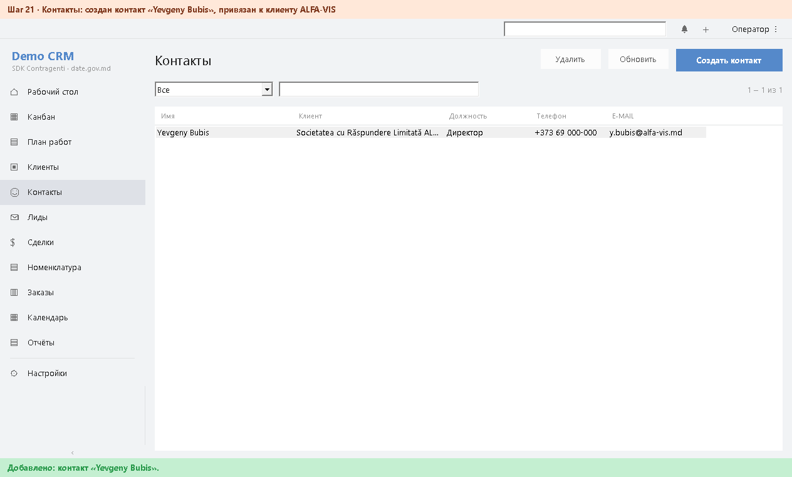
22Лиды: создан лид «Agro-Prim SRL» — в работе, источник «Выставка» — OK
лидов 1
Строка сообщений: Добавлено: лид «Ion Popescu».
после шага: 22_lead_new.png
{kind=link}
23Лиды: «В клиенты» — создан клиент Agro-Prim SRL, статус лида «Конвертирован» — OK
клиентов 2 → 3, статус лида: Конвертирован
Строка сообщений: Лид конвертирован: создан клиент «Agro-Prim SRL»
после шага: 23_lead_convert.png
{kind=link}
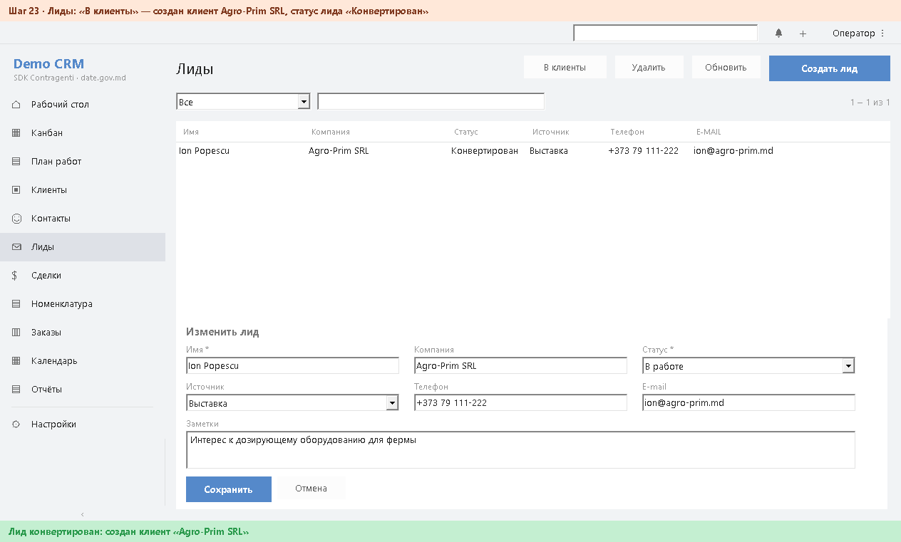
24Сделки: создана сделка 48 500 MDL для Agro-Prim на этапе «Предложение» — OK
сделок 1
Строка сообщений: Добавлено: сделку «Поставка дозирующей установки».
после шага: 24_deal_new.png
{kind=link}
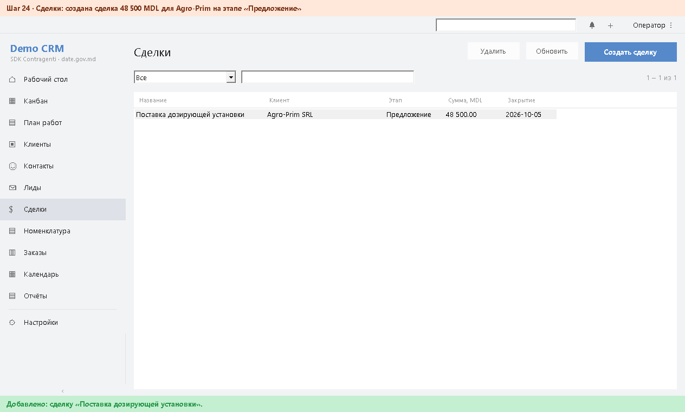
25Сделки: этап переведён в «Выиграна» (воронка) — OK
этап в базе: Выиграна
Строка сообщений: Сохранено: сделку «Поставка дозирующей установки».
после шага: 25_deal_won.png
{kind=link}
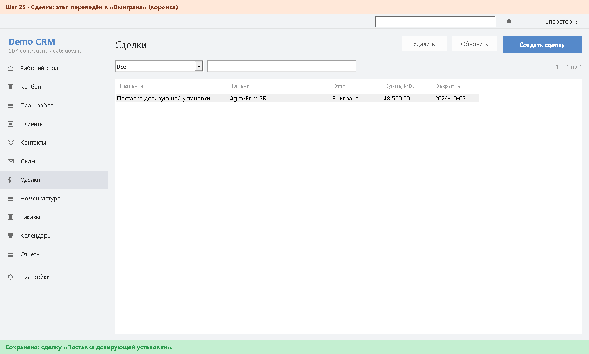
26Номенклатура: товар (остаток 5), услуга (час) и изделие собственного производства — OK
позиций 3
Строка сообщений: Добавлено: позицию «P-001».
после шага: 26_items.png
{kind=link}
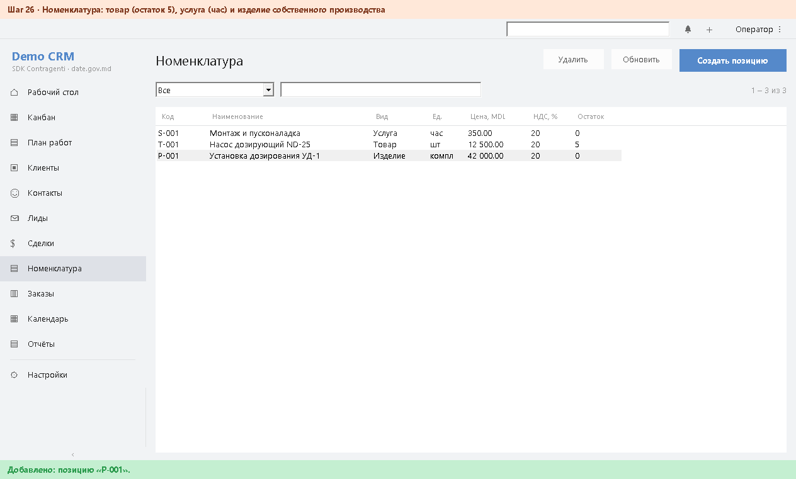
27Заказы: заказ на продажу №0001 — две строки (2 насоса + 8 ч монтажа), итого 27 800 MDL — OK
строк 2, итого 27800.00
Строка сообщений: Строка добавлена. Итого по заказу: 27 800.00 MDL
после шага: 27_order_lines.png
{kind=link}
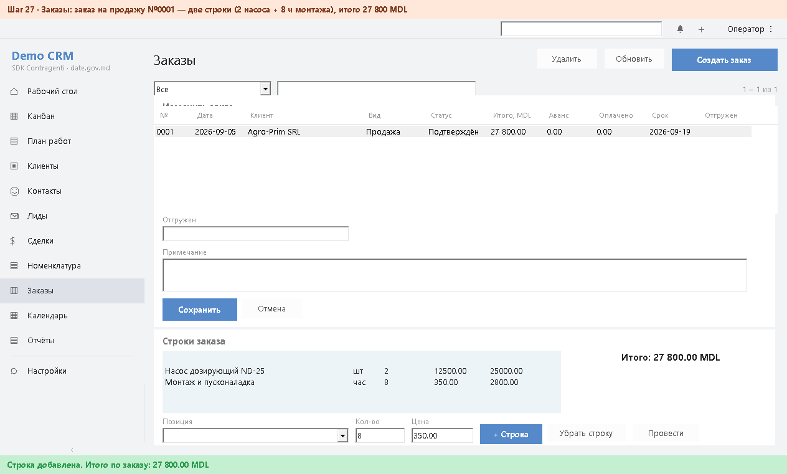
28Заказы: статус «Выполнен» + «Провести» — остаток насосов списан 5 → 3 — OK
остаток T-001 = 3; Заказ проведён: списано со склада по 2 строкам
Строка сообщений: Заказ проведён: списано со склада по 2 строкам
после шага: 28_order_posted.png
{kind=link}
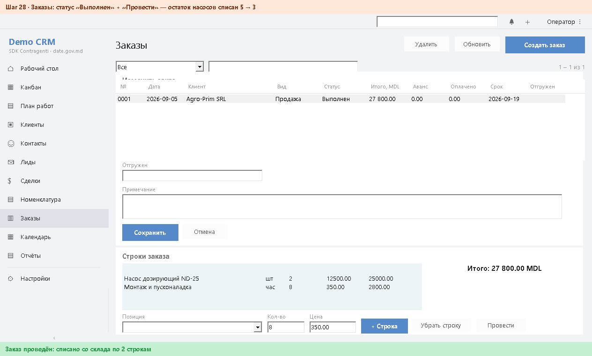
29Заказы: производственный заказ №0002 проведён — оприходовано 2 изделия (0 → 2) — OK
остаток P-001 = 2; Заказ проведён: оприходовано изделий по 1 строкам
Строка сообщений: Заказ проведён: оприходовано изделий по 1 строкам
после шага: 29_order_production.png
{kind=link}
30Календарь: звонок (просрочен на 2 дня) и встреча через 3 дня — OK
открытых задач 2
Строка сообщений: Добавлено: задачу «Встреча: приёмка установки УД-1».
после шага: 30_tasks.png
{kind=link}
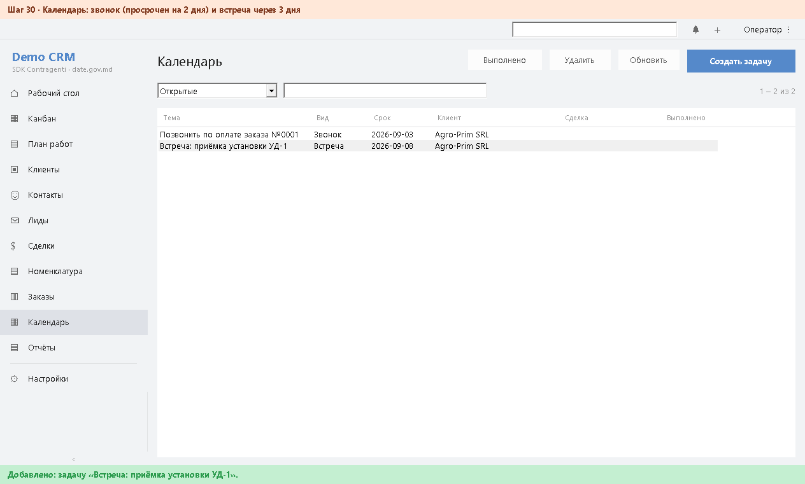
31Календарь: фильтр «Просроченные» — одна задача — OK
в списке 1
Строка сообщений: Фильтр: показано 1 из 2
после шага: 31_tasks_overdue.png
{kind=link}
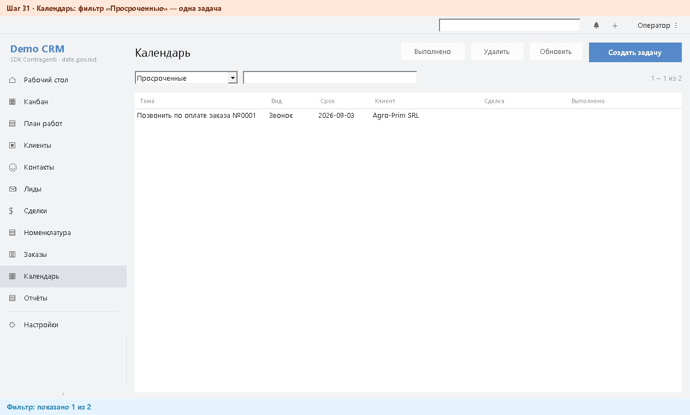
32Календарь: «Выполнено» — просроченная задача закрыта, список пуст — OK
в списке 0; Задача отмечена выполненной.
Строка сообщений: Задача отмечена выполненной.
после шага: 32_task_done.png
{kind=link}
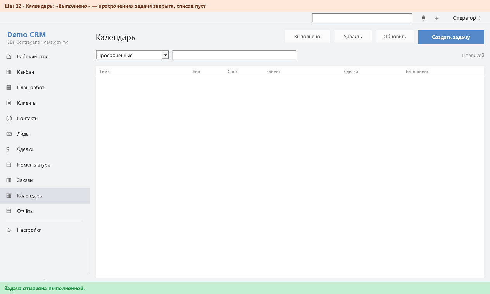
33Рабочий стол: плитки показывают процесс — два заказа исполнены и закрыты — OK
ожидает аванс=0, в работе=0, готово к отгрузке=2, ждём оплату=0, закрыто=0
Строка сообщений: Задача отмечена выполненной.
после шага: 33_workspace.png
{kind=link}
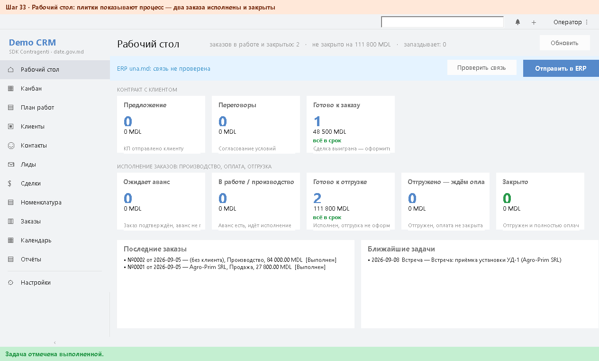
34Генератор тестовых данных: клиентов 13, контактов 20, лидов 12, сделок 11, номенклатуры 15, заказов 16 (строк 33), задач 24 — плитки процесса заполнились — OK
аванс=1, в работе=4, к отгрузке=3, ждём оплату=2, закрыто=3
Строка сообщений: Задача отмечена выполненной.
после шага: 34_seed_workspace.png
{kind=link}
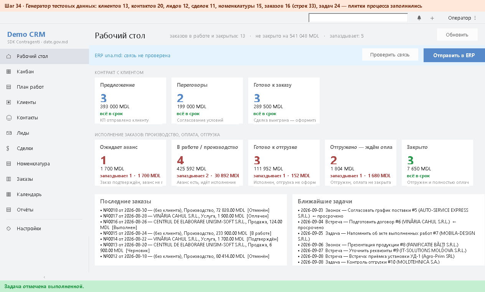
35Плитка «Отгружено — ждём оплату» открывает «Заказы» с этим фильтром — OK
в списке 2, по условию этапа 2
Строка сообщений: Заказы, этап «Отгружено — ждём оплату»: 2
после шага: 35_tile_drilldown.png
{kind=link}
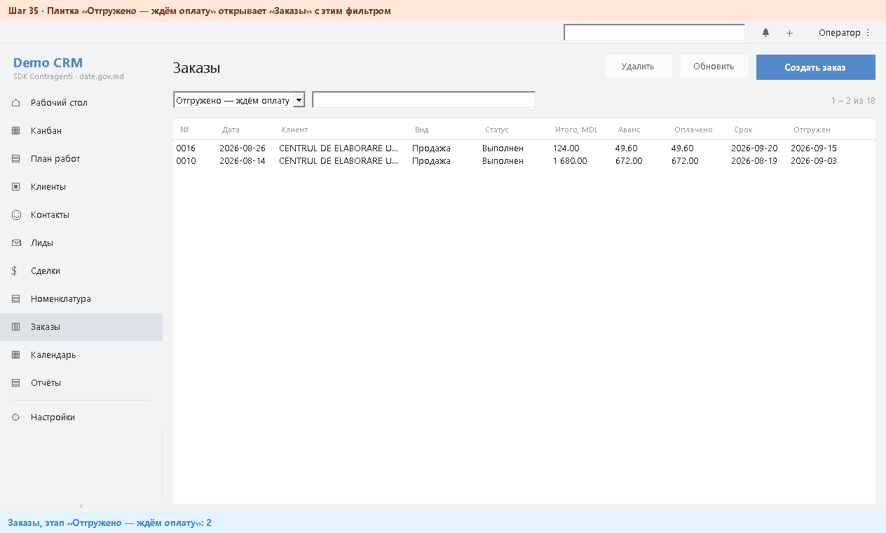
36Связь с ERP una.md по HTTP-API хаба: результат проверки виден в полосе ERP — OK
ERP недоступна: Error sending data: (12029) A connection with the server could not be established
Строка сообщений: ERP недоступна: Error sending data: (12029) A connection with the server could not be established
после шага: 36_erp_check.png
{kind=link}
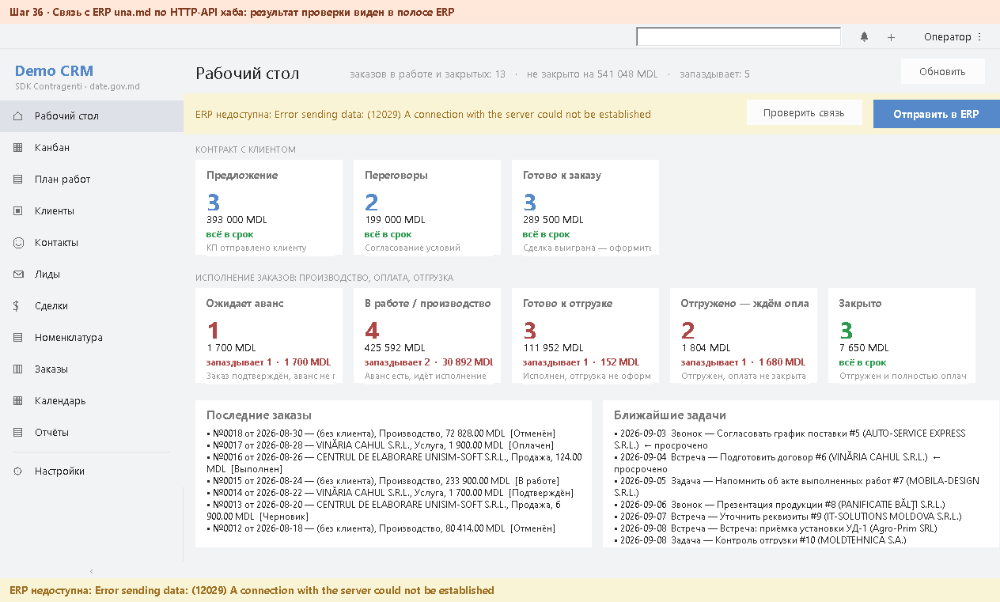
37Заказы на полном наборе: продажа / услуга / производство, все статусы — OK
в списке 18, в базе 18
Строка сообщений: ERP недоступна: Error sending data: (12029) A connection with the server could not be established
после шага: 37_seed_orders.png
{kind=link}
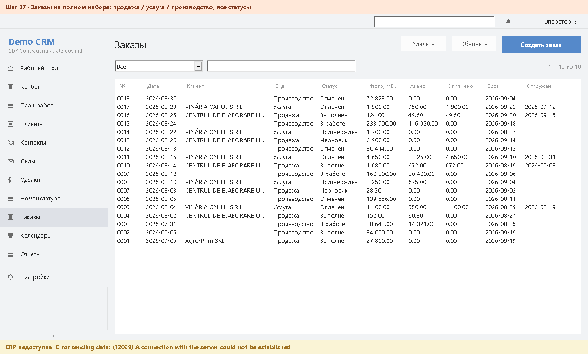
38Номенклатура на полном наборе: пресет «Нет на складе» — OK
без остатка 2 из 18
Строка сообщений: Фильтр: показано 2 из 18
после шага: 38_seed_items.png
{kind=link}
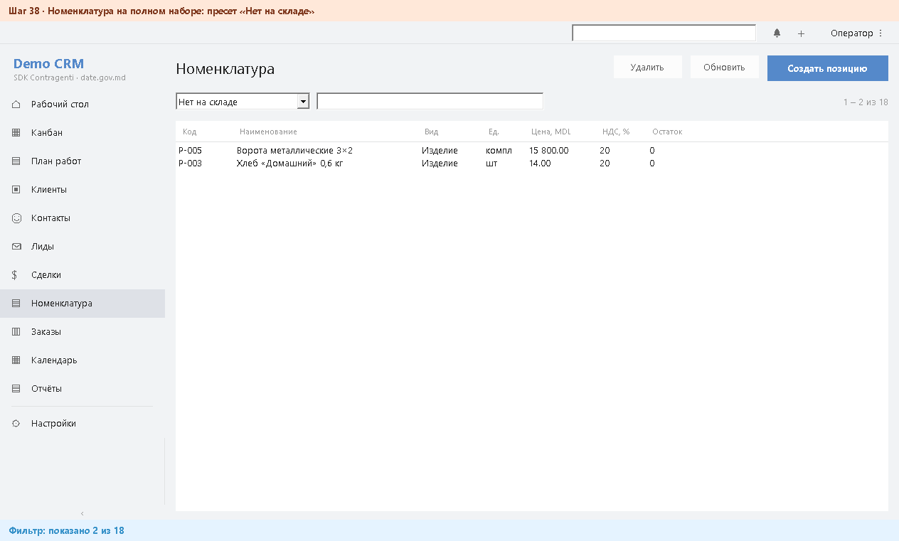
39Календарь на полном наборе: просроченные задачи выделены пресетом — OK
просроченных 2
Строка сообщений: Фильтр: показано 2 из 26
после шага: 39_seed_tasks_overdue.png
{kind=link}
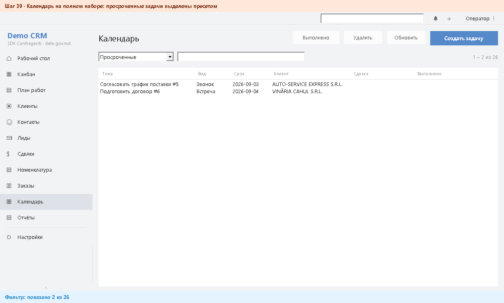
40Канбан «Заказы»: пять колонок процесса, карточки разложены по этапам — OK
колонок 5; по этапам: 1 / 4 / 3 / 2 / 3
Строка сообщений: Доска: Заказы — исполнение
после шага: 40_kanban_orders.png
{kind=link}
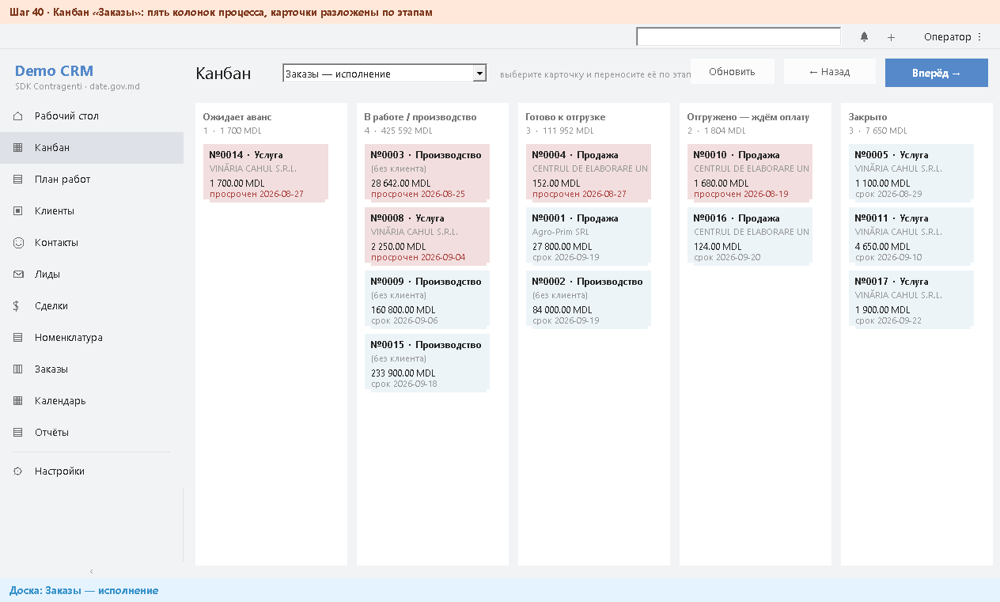
41Канбан: карточка перенесена «В работе» → «Готово к отгрузке», статус в базе изменён — OK
колонка 2, статус «Выполнен», этап 5
Строка сообщений: «№0003 · Производство» → этап «Готово к отгрузке»
после шага: 41_kanban_move.png
{kind=link}
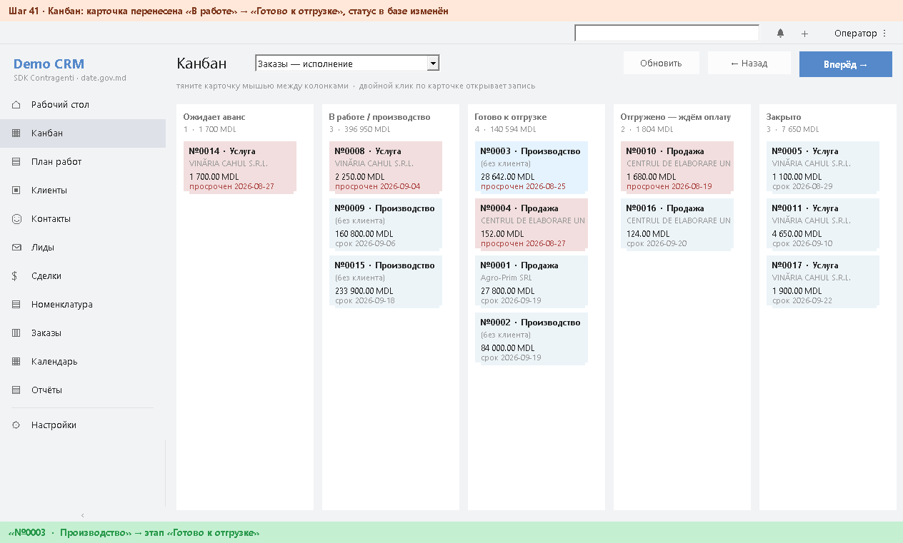
42Канбан: «← Назад» возвращает карточку на прежний этап — OK
колонка 1, этап 4
Строка сообщений: «№0003 · Производство» → этап «В работе / производство»
после шага: 42_kanban_back.png
{kind=link}
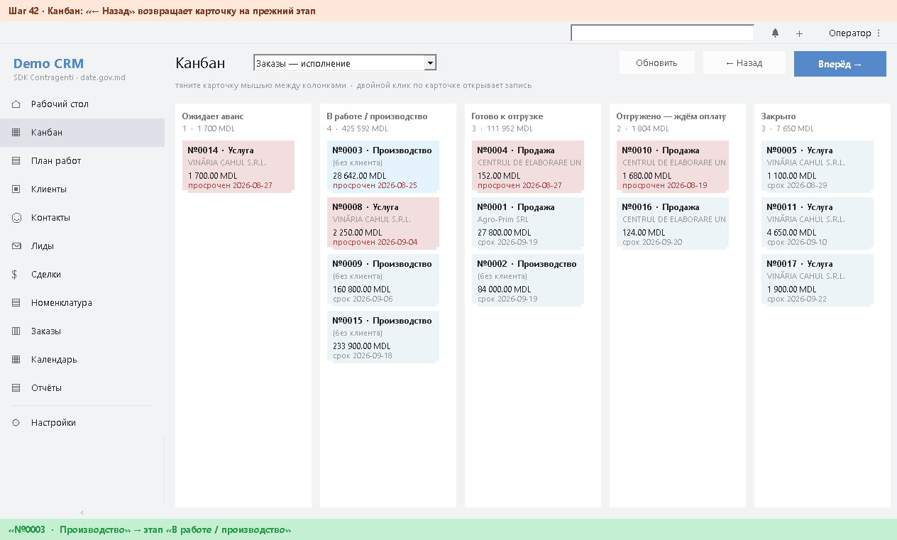
43Канбан: карточка перетащена мышью из «В работе» в «Отгружено — ждём оплату» — OK
в колонке «ждём оплату» 2 → 3, дата отгрузки «2026-09-05», этап 6
Строка сообщений: «№0003 · Производство» → этап «Отгружено — ждём оплату»
после шага: 43_kanban_drag.png
{kind=link}
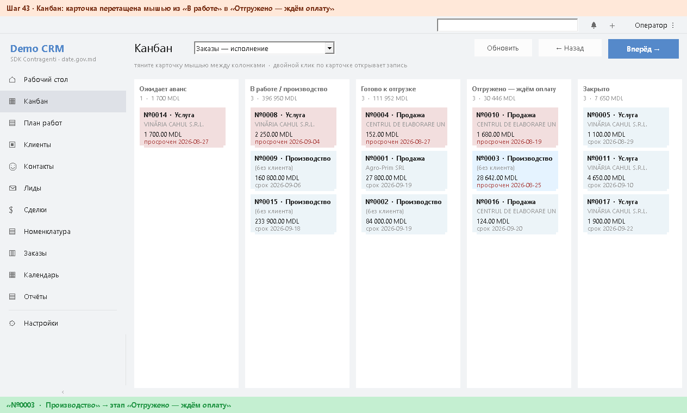
44Канбан: перетаскивание работает в обе стороны — дата отгрузки снята — OK
дата отгрузки «», этап 4
Строка сообщений: «№0003 · Производство» → этап «В работе / производство»
после шага: 44_kanban_drag_back.png
{kind=link}
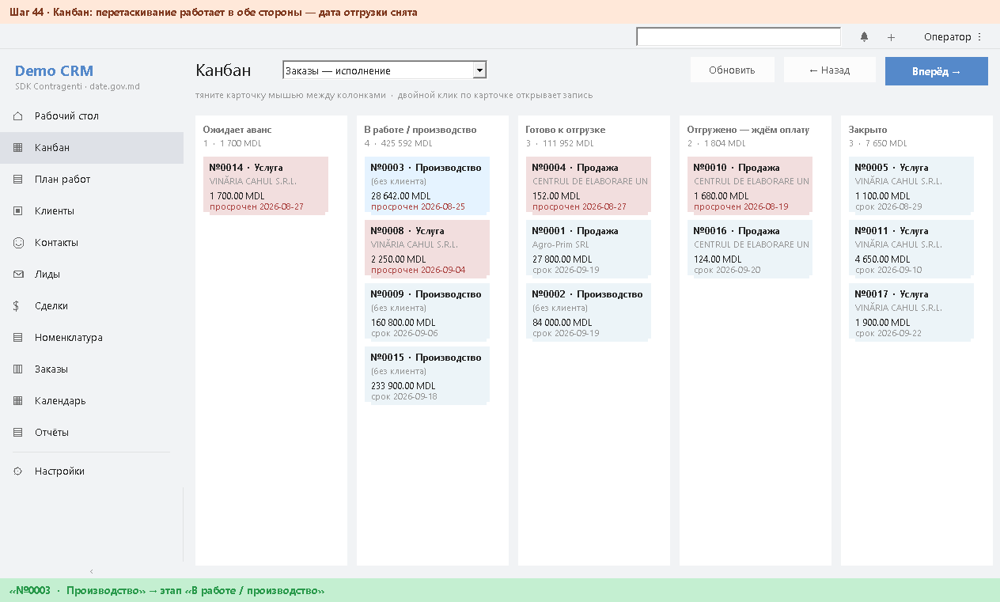
45Канбан «Задачи»: колонки по срокам — просрочено / сегодня / позже / выполнено — OK
колонок 4; просрочено 2, сегодня 1, позже 18, выполнено 5
Строка сообщений: Доска: Задачи — работы
после шага: 45_kanban_tasks.png
{kind=link}
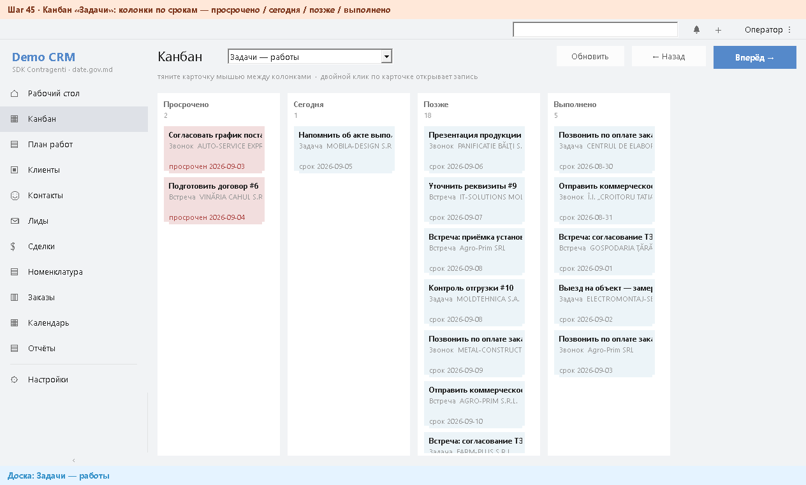
46План работ (Гант): производственные заказы и их операции на шкале времени — OK
строк 14, из них работ 10, просрочено заказов 1; период 29.07.2026 — 21.09.2026
Строка сообщений: План работ: Производство · строк: 14 (работ: 10), просрочено: 1 · 29.07.2026 — 21.09.2026
после шага: 46_gantt_production.png
{kind=link}
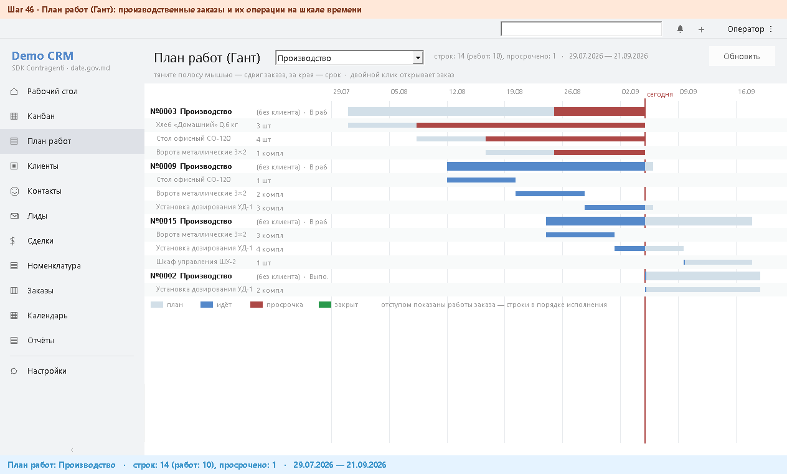
47План работ: полоса заказа перетащена мышью на 5 дней вперёд — даты в базе сдвинулись — OK
было 31.07–25.08, стало 05.08–30.08 (в базе 2026-08-05)
Строка сообщений: №0003 Производство: сдвинут — 31.07–25.08 → 05.08–30.08 (+5 дн.)
после шага: 47_gantt_drag_move.png
{kind=link}
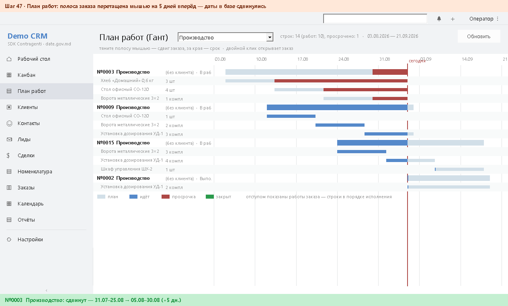
48План работ: за правый край полосы растянут только срок, дата заказа не тронута — OK
срок 30.08 → 06.09, начало осталось 05.08
Строка сообщений: №0003 Производство: изменён срок — 05.08–30.08 → 05.08–06.09 (+7 дн.)
после шага: 48_gantt_drag_resize.png
{kind=link}
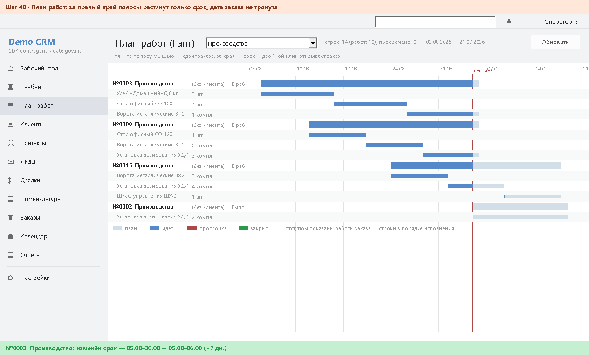
49План работ: фильтр «Все заказы» — строк становится больше — OK
строк 42, работ 27
Строка сообщений: План работ: Все заказы · строк: 42 (работ: 27), просрочено: 5 · 31.07.2026 — 24.09.2026
после шага: 49_gantt_all.png
{kind=link}
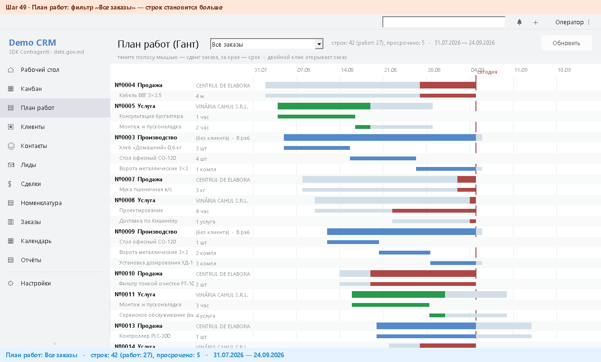
50Отчёты: «Процесс исполнения заказов» — предпросмотр по этапам — OK
строк 9, колонок 6
Строка сообщений: План работ: Все заказы · строк: 42 (работ: 27), просрочено: 5 · 31.07.2026 — 24.09.2026
после шага: 50_report_process.png
{kind=link}
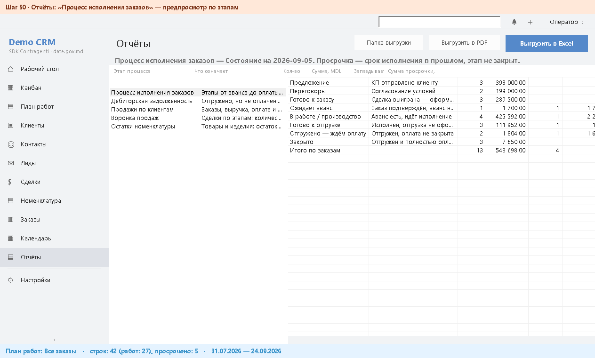
51Выгрузка отчёта в Excel и PDF — OK
process_2026-09-05.xlsx (3209 байт, zip=True); process_2026-09-05.pdf (1090499 байт, %PDF=True)
Строка сообщений: Отчёт «Процесс исполнения заказов» выгружен: F:\grok\contragents data gov\crm_delphi\reports\process_2026-09-05.pdf
после шага: 51_report_export.png
{kind=link}
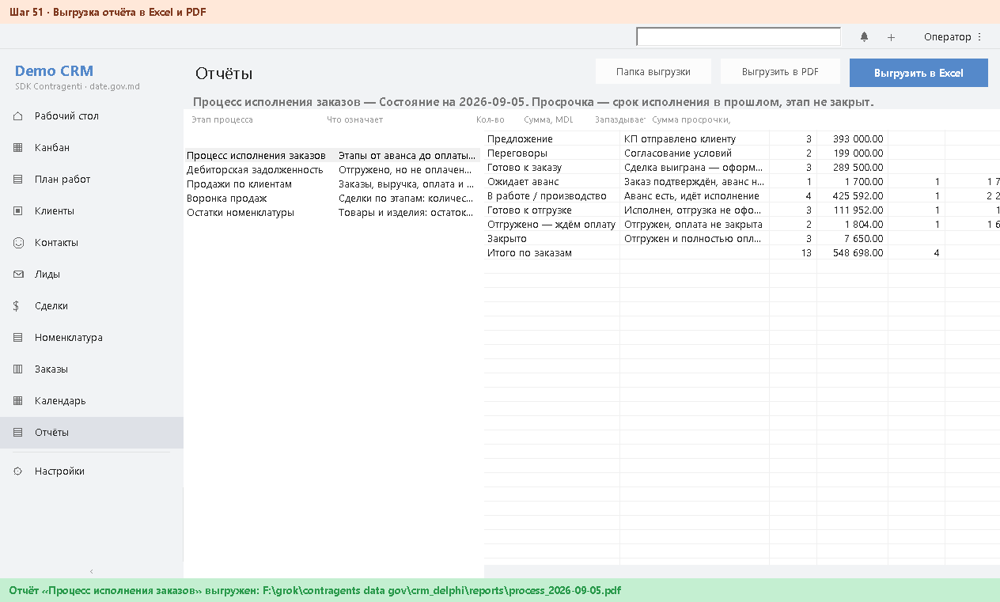
52Отчёт «Дебиторская задолженность»: строки есть, выгружен в оба формата — OK
строк 3; receivables_2026-09-05.xlsx, receivables_2026-09-05.pdf
Строка сообщений: Отчёт «Дебиторская задолженность» выгружен: F:\grok\contragents data gov\crm_delphi\reports\receivables_2026-09-05.pdf
после шага: 52_report_receivables.png
{kind=link}
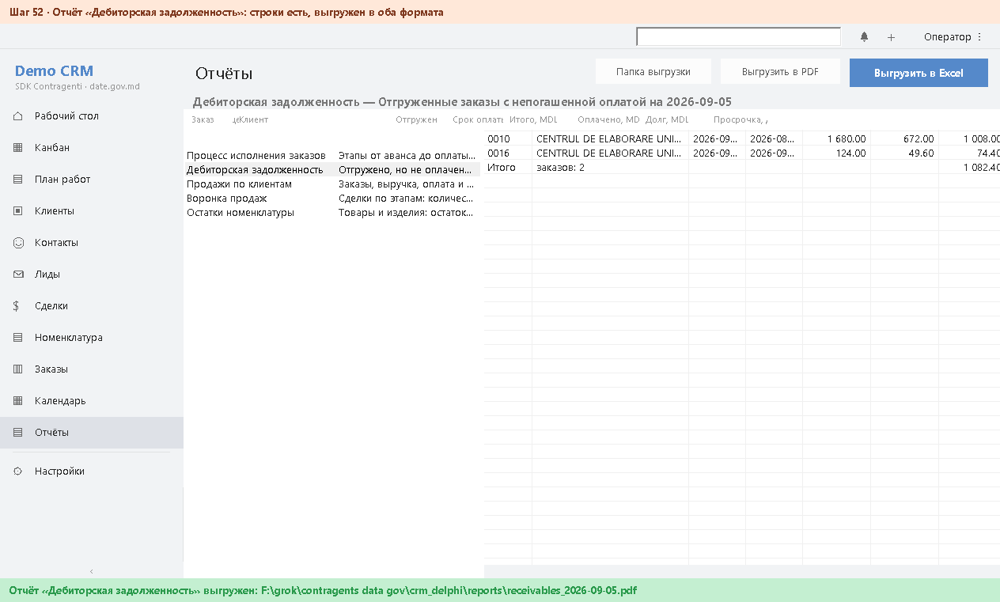
{kind=link}
{kind=link}